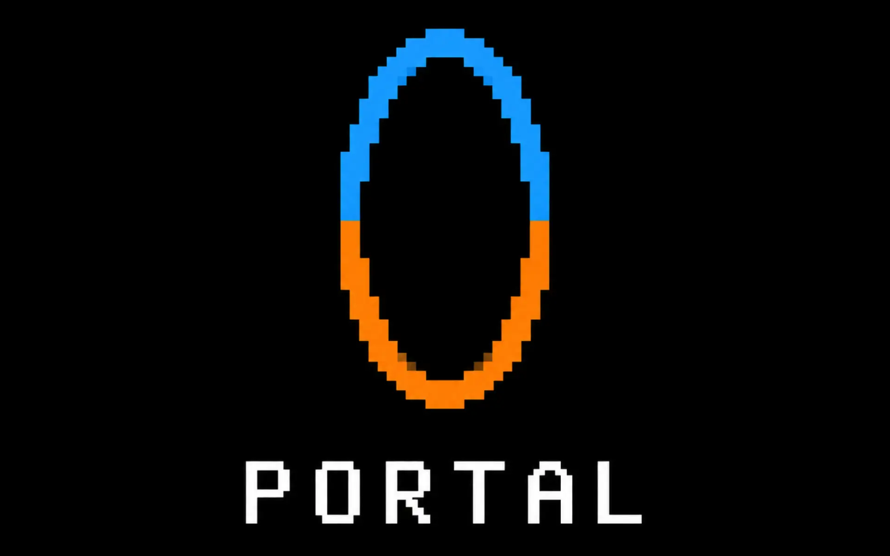
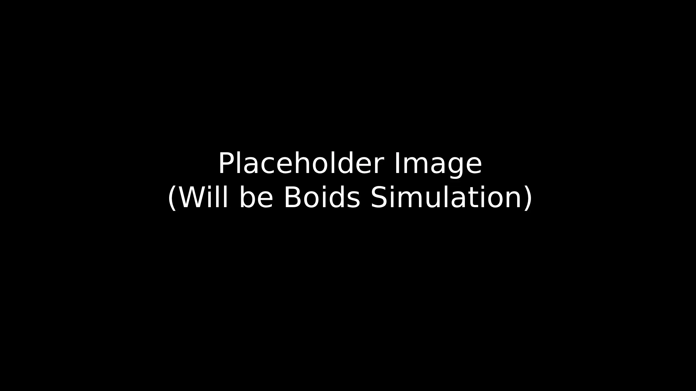

Dissertation Project
Food Waste Application
A mobile application focused on simplifying household food tracking through expiration monitoring, visual organisation, and streamlined interaction design.
View ProjectArchive
A collection of the projects, prototypes, and experiments I have worked on through the years.
Dissertation Project
A mobile application focused on simplifying household food tracking through expiration monitoring, visual organisation, and streamlined interaction design.
View Project
Technical Prototype
An immersive in-world operating system prototype featuring custom interaction systems, simulated desktop functionality, and usability-focused interface design.
View Project

Nintendo Entertainment System Game
A demake of the game Portal, reimagined for the NES.
View Project

Parallel and Concurrent Applicaiton
A Boids simulation showing the difference in performance with Parallel and Concurrent Programming.
View Project